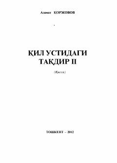

QUQimor girdobiga tushib qolgan ayolning fojiali sarguzashtlari va hayotiy kurashlari haqidagi qissa.
Azamat Koržovovning ushbu asari qimor girdobiga tushib qolgan bosh qahramon Lobarning xorijdagi og'ir sarguzashtlari va boshidan kechirgan sinovlari haqida hikoya qiladi. Ikkinchi kitobda qahramonning jinoyatchilar davrasidagi kurashlari va farzandini deb chekkan azob-uqubatlari tasvirlangan. Asar inson hayotida noqonuniy yo'llarni tanlash fojiali oqibatlarga olib kelishini ochib beradi.